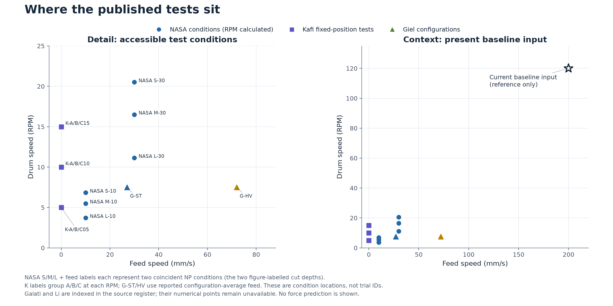
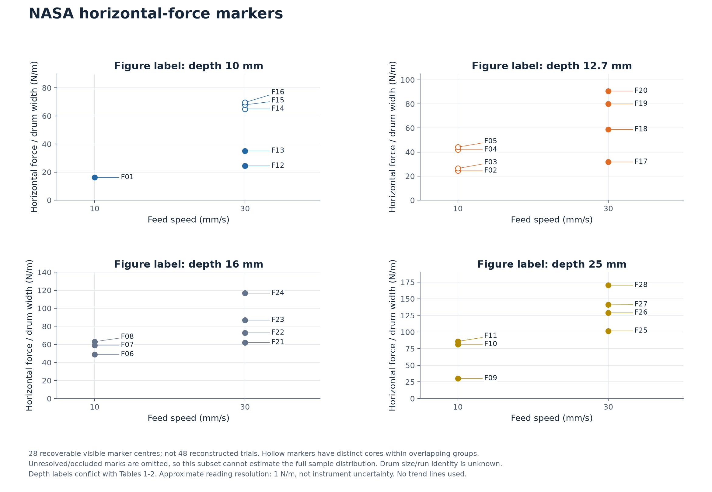
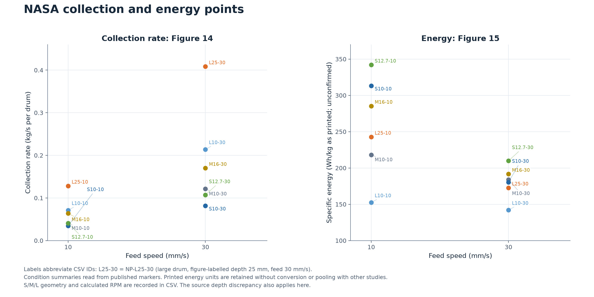
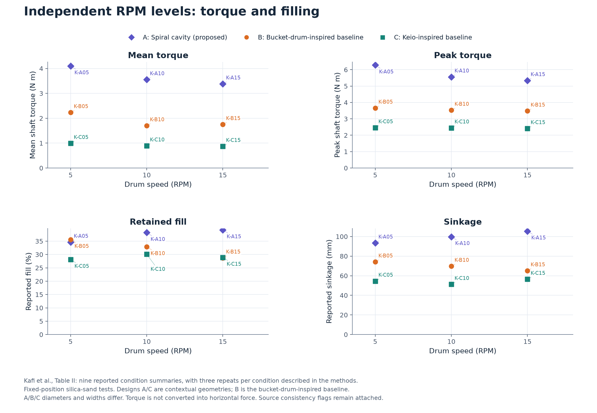
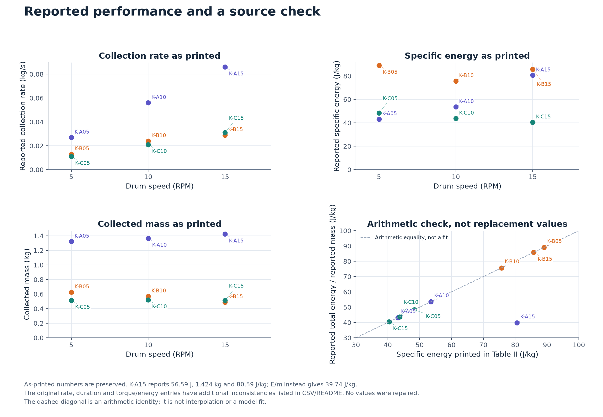
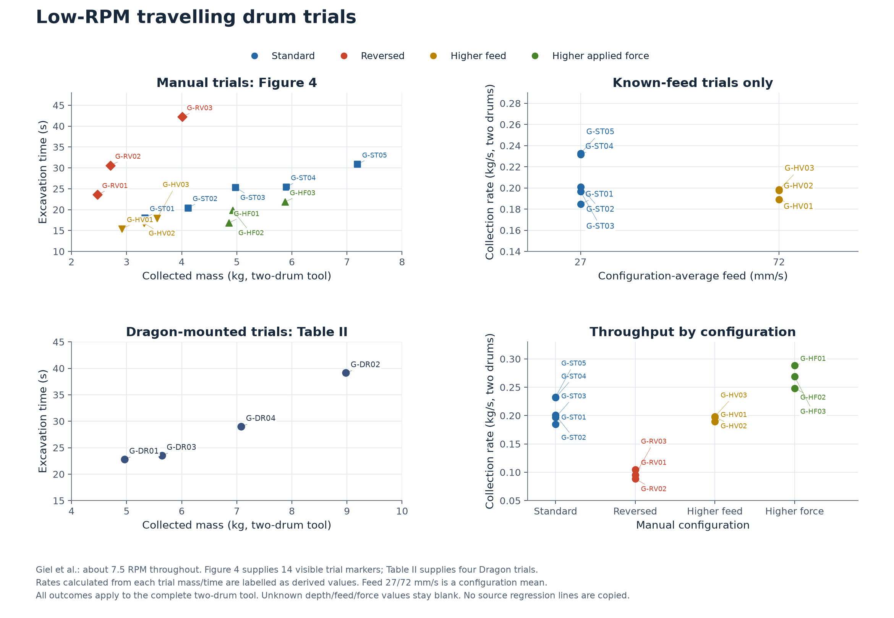
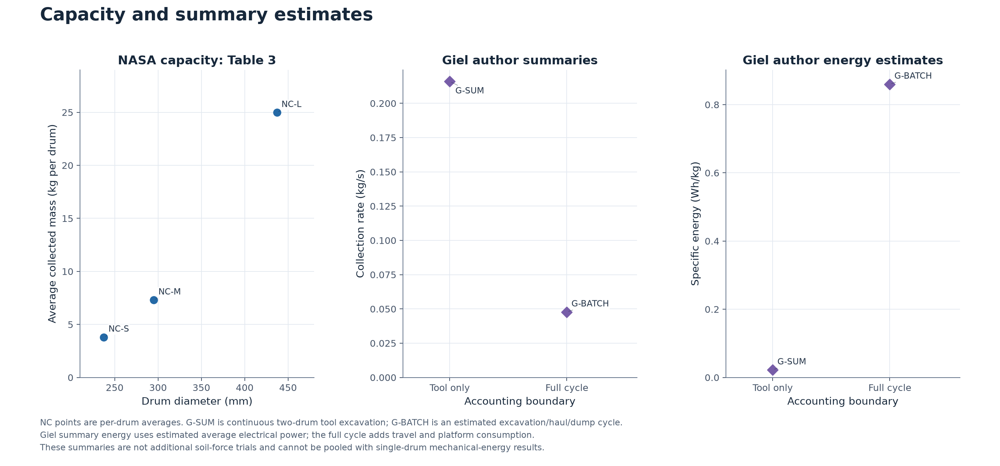

Labelled points only. No fitted surface, interpolation, geometry transfer or model change. Review date: 8 November 2026.
Download all records (CSV) · Provenance and extraction details · Units and quality notes
| Source | Paper | Coverage | Records |
|---|---|---|---|
| NASA22 | Schuler et al. (2022) | Points extracted: Figures 13-15 and Table 3 | 43 |
| GAL26 | Galati et al. (2026) | Pending full text / author data; zero numerical response points extracted | 0 |
| LI24 | Li et al. (2024) | Pending full text; zero numerical response points extracted | 0 |
| KAF26 | Kafi et al. (2026) | All nine Table II conditions extracted; as-reported inconsistencies flagged | 9 |
| GIE25 | Giel et al. (2025) | Figure 4 trial markers, four Table II trials, two author summaries extracted | 20 |
Galati and Li are included in this register, with no invented numerical points. Their full papers/data are needed to add the response values. Records below include trial markers, condition summaries and author estimates; they are not interchangeable samples.

NASA S/M/L + feed labels each represent two coincident NP conditions (the two figure-labelled cut depths).
K labels group A/B/C at each RPM; G-ST/HV use reported configuration-average feed. These are condition locations, not trial IDs.
Galati and Li are indexed in the source register; their numerical points remain unavailable. No force prediction is shown.

28 recoverable visible marker centres; not 48 reconstructed trials. Hollow markers have distinct cores within overlapping groups.
Unresolved/occluded marks are omitted, so this subset cannot estimate the full sample distribution. Drum size/run identity is unknown.
Depth labels conflict with Tables 1-2. Approximate reading resolution: 1 N/m, not instrument uncertainty. No trend lines used.

Labels abbreviate CSV IDs: L25-30 = NP-L25-30 (large drum, figure-labelled depth 25 mm, feed 30 mm/s).
Condition summaries read from published markers. Printed energy units are retained without conversion or pooling with other studies.
S/M/L geometry and calculated RPM are recorded in CSV. The source depth discrepancy also applies here.

Kafi et al., Table II: nine reported condition summaries, with three repeats per condition described in the methods.
Fixed-position silica-sand tests. Designs A/C are contextual geometries; B is the bucket-drum-inspired baseline.
A/B/C diameters and widths differ. Torque is not converted into horizontal force. Source consistency flags remain attached.

As-printed numbers are preserved. K-A15 reports 56.59 J, 1.424 kg and 80.59 J/kg; E/m instead gives 39.74 J/kg.
The original rate, duration and torque/energy entries have additional inconsistencies listed in CSV/README. No values were repaired.
The dashed diagonal is an arithmetic identity; it is not interpolation or a model fit.

Giel et al.: about 7.5 RPM throughout. Figure 4 supplies 14 visible trial markers; Table II supplies four Dragon trials.
Rates calculated from each trial mass/time are labelled as derived values. Feed 27/72 mm/s is a configuration mean.
All outcomes apply to the complete two-drum tool. Unknown depth/feed/force values stay blank. No source regression lines are copied.

NC points are per-drum averages. G-SUM is continuous two-drum tool excavation; G-BATCH is an estimated excavation/haul/dump cycle.
Giel summary energy uses estimated average electrical power; the full cycle adds travel and platform consumption.
These summaries are not additional soil-force trials and cannot be pooled with single-drum mechanical-energy results.
| point_id | source_id | record_kind | source_locator | feed_speed_m_s | drum_rpm | cut_depth_m | horizontal_force_per_width_N_m | mean_torque_N_m | peak_torque_N_m | collected_mass_kg | test_duration_s | collection_rate_kg_s | specific_energy_reported_value | specific_energy_reported_unit | quality_flags |
|---|---|---|---|---|---|---|---|---|---|---|---|---|---|---|---|
| F01 | NASA22 | digitized_published_marker | Figure 13, PDF page 12 | 0.01 | 0.01 | 16.2 | source_depth_conflict;run_identity_unknown;incomplete_visible_sample | ||||||||
| F02 | NASA22 | digitized_published_marker | Figure 13, PDF page 12 | 0.01 | 0.0127 | 24.4 | source_depth_conflict;run_identity_unknown;incomplete_visible_sample;overlapping_markers | ||||||||
| F03 | NASA22 | digitized_published_marker | Figure 13, PDF page 12 | 0.01 | 0.0127 | 26.4 | source_depth_conflict;run_identity_unknown;incomplete_visible_sample;overlapping_markers | ||||||||
| F04 | NASA22 | digitized_published_marker | Figure 13, PDF page 12 | 0.01 | 0.0127 | 41.9 | source_depth_conflict;run_identity_unknown;incomplete_visible_sample;overlapping_markers | ||||||||
| F05 | NASA22 | digitized_published_marker | Figure 13, PDF page 12 | 0.01 | 0.0127 | 44.1 | source_depth_conflict;run_identity_unknown;incomplete_visible_sample;overlapping_markers | ||||||||
| F06 | NASA22 | digitized_published_marker | Figure 13, PDF page 12 | 0.01 | 0.016 | 48.9 | source_depth_conflict;run_identity_unknown;incomplete_visible_sample | ||||||||
| F07 | NASA22 | digitized_published_marker | Figure 13, PDF page 12 | 0.01 | 0.016 | 59.1 | source_depth_conflict;run_identity_unknown;incomplete_visible_sample | ||||||||
| F08 | NASA22 | digitized_published_marker | Figure 13, PDF page 12 | 0.01 | 0.016 | 63.0 | source_depth_conflict;run_identity_unknown;incomplete_visible_sample | ||||||||
| F09 | NASA22 | digitized_published_marker | Figure 13, PDF page 12 | 0.01 | 0.025 | 30.2 | source_depth_conflict;run_identity_unknown;incomplete_visible_sample | ||||||||
| F10 | NASA22 | digitized_published_marker | Figure 13, PDF page 12 | 0.01 | 0.025 | 81.5 | source_depth_conflict;run_identity_unknown;incomplete_visible_sample | ||||||||
| F11 | NASA22 | digitized_published_marker | Figure 13, PDF page 12 | 0.01 | 0.025 | 85.9 | source_depth_conflict;run_identity_unknown;incomplete_visible_sample | ||||||||
| F12 | NASA22 | digitized_published_marker | Figure 13, PDF page 12 | 0.03 | 0.01 | 24.4 | source_depth_conflict;run_identity_unknown;incomplete_visible_sample | ||||||||
| F13 | NASA22 | digitized_published_marker | Figure 13, PDF page 12 | 0.03 | 0.01 | 35.1 | source_depth_conflict;run_identity_unknown;incomplete_visible_sample | ||||||||
| F14 | NASA22 | digitized_published_marker | Figure 13, PDF page 12 | 0.03 | 0.01 | 65.0 | source_depth_conflict;run_identity_unknown;incomplete_visible_sample;overlapping_markers | ||||||||
| F15 | NASA22 | digitized_published_marker | Figure 13, PDF page 12 | 0.03 | 0.01 | 67.9 | source_depth_conflict;run_identity_unknown;incomplete_visible_sample;overlapping_markers | ||||||||
| F16 | NASA22 | digitized_published_marker | Figure 13, PDF page 12 | 0.03 | 0.01 | 69.6 | source_depth_conflict;run_identity_unknown;incomplete_visible_sample;overlapping_markers | ||||||||
| F17 | NASA22 | digitized_published_marker | Figure 13, PDF page 12 | 0.03 | 0.0127 | 31.7 | source_depth_conflict;run_identity_unknown;incomplete_visible_sample | ||||||||
| F18 | NASA22 | digitized_published_marker | Figure 13, PDF page 12 | 0.03 | 0.0127 | 58.7 | source_depth_conflict;run_identity_unknown;incomplete_visible_sample | ||||||||
| F19 | NASA22 | digitized_published_marker | Figure 13, PDF page 12 | 0.03 | 0.0127 | 80.0 | source_depth_conflict;run_identity_unknown;incomplete_visible_sample | ||||||||
| F20 | NASA22 | digitized_published_marker | Figure 13, PDF page 12 | 0.03 | 0.0127 | 90.7 | source_depth_conflict;run_identity_unknown;incomplete_visible_sample | ||||||||
| F21 | NASA22 | digitized_published_marker | Figure 13, PDF page 12 | 0.03 | 0.016 | 62.1 | source_depth_conflict;run_identity_unknown;incomplete_visible_sample | ||||||||
| F22 | NASA22 | digitized_published_marker | Figure 13, PDF page 12 | 0.03 | 0.016 | 72.8 | source_depth_conflict;run_identity_unknown;incomplete_visible_sample | ||||||||
| F23 | NASA22 | digitized_published_marker | Figure 13, PDF page 12 | 0.03 | 0.016 | 86.8 | source_depth_conflict;run_identity_unknown;incomplete_visible_sample | ||||||||
| F24 | NASA22 | digitized_published_marker | Figure 13, PDF page 12 | 0.03 | 0.016 | 116.7 | source_depth_conflict;run_identity_unknown;incomplete_visible_sample | ||||||||
| F25 | NASA22 | digitized_published_marker | Figure 13, PDF page 12 | 0.03 | 0.025 | 101.7 | source_depth_conflict;run_identity_unknown;incomplete_visible_sample | ||||||||
| F26 | NASA22 | digitized_published_marker | Figure 13, PDF page 12 | 0.03 | 0.025 | 128.9 | source_depth_conflict;run_identity_unknown;incomplete_visible_sample | ||||||||
| F27 | NASA22 | digitized_published_marker | Figure 13, PDF page 12 | 0.03 | 0.025 | 141.0 | source_depth_conflict;run_identity_unknown;incomplete_visible_sample | ||||||||
| F28 | NASA22 | digitized_published_marker | Figure 13, PDF page 12 | 0.03 | 0.025 | 170.4 | source_depth_conflict;run_identity_unknown;incomplete_visible_sample | ||||||||
| NP-L10-10 | NASA22 | digitized_condition_summary | Figure 14 (PDF page 13) and Figure 15 (PDF page 14) | 0.01 | 3.714 | 0.01 | 0.0712 | 152.4 | Wh/kg (printed; unconfirmed) | source_depth_conflict;NASA_energy_unit_unconfirmed | |||||
| NP-L10-30 | NASA22 | digitized_condition_summary | Figure 14 (PDF page 13) and Figure 15 (PDF page 14) | 0.03 | 11.1419 | 0.01 | 0.214 | 142.0 | Wh/kg (printed; unconfirmed) | source_depth_conflict;NASA_energy_unit_unconfirmed | |||||
| NP-L25-10 | NASA22 | digitized_condition_summary | Figure 14 (PDF page 13) and Figure 15 (PDF page 14) | 0.01 | 3.714 | 0.025 | 0.1282 | 242.7 | Wh/kg (printed; unconfirmed) | source_depth_conflict;NASA_energy_unit_unconfirmed | |||||
| NP-L25-30 | NASA22 | digitized_condition_summary | Figure 14 (PDF page 13) and Figure 15 (PDF page 14) | 0.03 | 11.1419 | 0.025 | 0.4083 | 172.7 | Wh/kg (printed; unconfirmed) | source_depth_conflict;NASA_energy_unit_unconfirmed | |||||
| NP-M10-10 | NASA22 | digitized_condition_summary | Figure 14 (PDF page 13) and Figure 15 (PDF page 14) | 0.01 | 5.5011 | 0.01 | 0.0405 | 218.2 | Wh/kg (printed; unconfirmed) | source_depth_conflict;NASA_energy_unit_unconfirmed | |||||
| NP-M10-30 | NASA22 | digitized_condition_summary | Figure 14 (PDF page 13) and Figure 15 (PDF page 14) | 0.03 | 16.5034 | 0.01 | 0.1212 | 183.9 | Wh/kg (printed; unconfirmed) | source_depth_conflict;NASA_energy_unit_unconfirmed | |||||
| NP-M16-10 | NASA22 | digitized_condition_summary | Figure 14 (PDF page 13) and Figure 15 (PDF page 14) | 0.01 | 5.5011 | 0.016 | 0.0637 | 285.3 | Wh/kg (printed; unconfirmed) | source_depth_conflict;NASA_energy_unit_unconfirmed | |||||
| NP-M16-30 | NASA22 | digitized_condition_summary | Figure 14 (PDF page 13) and Figure 15 (PDF page 14) | 0.03 | 16.5034 | 0.016 | 0.1699 | 191.6 | Wh/kg (printed; unconfirmed) | source_depth_conflict;NASA_energy_unit_unconfirmed | |||||
| NP-S10-10 | NASA22 | digitized_condition_summary | Figure 14 (PDF page 13) and Figure 15 (PDF page 14) | 0.01 | 6.8353 | 0.01 | 0.0346 | 313.3 | Wh/kg (printed; unconfirmed) | source_depth_conflict;NASA_energy_unit_unconfirmed | |||||
| NP-S10-30 | NASA22 | digitized_condition_summary | Figure 14 (PDF page 13) and Figure 15 (PDF page 14) | 0.03 | 20.5059 | 0.01 | 0.0818 | 180.4 | Wh/kg (printed; unconfirmed) | source_depth_conflict;NASA_energy_unit_unconfirmed | |||||
| NP-S12.7-10 | NASA22 | digitized_condition_summary | Figure 14 (PDF page 13) and Figure 15 (PDF page 14) | 0.01 | 6.8353 | 0.0127 | 0.0405 | 342.0 | Wh/kg (printed; unconfirmed) | source_depth_conflict;NASA_energy_unit_unconfirmed | |||||
| NP-S12.7-30 | NASA22 | digitized_condition_summary | Figure 14 (PDF page 13) and Figure 15 (PDF page 14) | 0.03 | 20.5059 | 0.0127 | 0.107 | 209.8 | Wh/kg (printed; unconfirmed) | source_depth_conflict;NASA_energy_unit_unconfirmed | |||||
| NC-S | NASA22 | tabulated_summary | Table 3, PDF page 13 | 3.8 | |||||||||||
| NC-M | NASA22 | tabulated_summary | Table 3, PDF page 13 | 7.3 | |||||||||||
| NC-L | NASA22 | tabulated_summary | Table 3, PDF page 13 | 24.98 | |||||||||||
| K-A05 | KAF26 | tabulated_condition_summary | Table II, PDF page 5; geometry Table I, page 3 | 0.0 | 5 | 4.1 | 6.28 | 1.322 | 48.0 | 0.027 | 43.17 | J/kg | source_time_conflict;reported_rate_mass_time_discrepancy;source_torque_energy_discrepancy | ||
| K-A10 | KAF26 | tabulated_condition_summary | Table II, PDF page 5; geometry Table I, page 3 | 0.0 | 10 | 3.55 | 5.56 | 1.366 | 24.0 | 0.056 | 53.56 | J/kg | source_time_conflict;reported_rate_mass_time_discrepancy;source_torque_energy_discrepancy | ||
| K-A15 | KAF26 | tabulated_condition_summary | Table II, PDF page 5; geometry Table I, page 3 | 0.0 | 15 | 3.38 | 5.34 | 1.424 | 16.0 | 0.086 | 80.59 | J/kg | source_time_conflict;reported_rate_mass_time_discrepancy;source_torque_energy_discrepancy;source_specific_energy_arithmetic_discrepancy | ||
| K-B05 | KAF26 | tabulated_condition_summary | Table II, PDF page 5; geometry Table I, page 3 | 0.0 | 5 | 2.23 | 3.66 | 0.626 | 48.0 | 0.013 | 89.03 | J/kg | source_time_conflict | ||
| K-B10 | KAF26 | tabulated_condition_summary | Table II, PDF page 5; geometry Table I, page 3 | 0.0 | 10 | 1.7 | 3.53 | 0.57 | 24.0 | 0.024 | 75.7 | J/kg | source_time_conflict | ||
| K-B15 | KAF26 | tabulated_condition_summary | Table II, PDF page 5; geometry Table I, page 3 | 0.0 | 15 | 1.75 | 3.48 | 0.49 | 16.0 | 0.029 | 85.83 | J/kg | source_time_conflict;reported_rate_mass_time_discrepancy | ||
| K-C05 | KAF26 | tabulated_condition_summary | Table II, PDF page 5; geometry Table I, page 3 | 0.0 | 5 | 0.99 | 2.46 | 0.514 | 48.0 | 0.011 | 48.33 | J/kg | source_time_conflict | ||
| K-C10 | KAF26 | tabulated_condition_summary | Table II, PDF page 5; geometry Table I, page 3 | 0.0 | 10 | 0.89 | 2.45 | 0.521 | 24.0 | 0.021 | 43.74 | J/kg | source_time_conflict;reported_rate_mass_time_discrepancy | ||
| K-C15 | KAF26 | tabulated_condition_summary | Table II, PDF page 5; geometry Table I, page 3 | 0.0 | 15 | 0.87 | 2.41 | 0.512 | 16.0 | 0.031 | 40.44 | J/kg | source_time_conflict;reported_rate_mass_time_discrepancy | ||
| G-ST01 | GIE25 | digitized_trial_marker | Figure 4, PDF page 4 | 0.027 | 7.5 | 3.333 | 18.06 | 0.18455 | feed_not_trial_specific;cut_depth_unreported;manual_motion | ||||||
| G-ST02 | GIE25 | digitized_trial_marker | Figure 4, PDF page 4 | 0.027 | 7.5 | 4.112 | 20.46 | 0.20098 | feed_not_trial_specific;cut_depth_unreported;manual_motion | ||||||
| G-ST03 | GIE25 | digitized_trial_marker | Figure 4, PDF page 4 | 0.027 | 7.5 | 4.977 | 25.31 | 0.19664 | feed_not_trial_specific;cut_depth_unreported;manual_motion | ||||||
| G-ST04 | GIE25 | digitized_trial_marker | Figure 4, PDF page 4 | 0.027 | 7.5 | 5.894 | 25.45 | 0.23159 | feed_not_trial_specific;cut_depth_unreported;manual_motion | ||||||
| G-ST05 | GIE25 | digitized_trial_marker | Figure 4, PDF page 4 | 0.027 | 7.5 | 7.188 | 30.88 | 0.23277 | feed_not_trial_specific;cut_depth_unreported;manual_motion | ||||||
| G-RV01 | GIE25 | digitized_trial_marker | Figure 4, PDF page 4 | 7.5 | 2.469 | 23.58 | 0.10471 | feed_not_trial_specific;cut_depth_unreported;manual_motion | |||||||
| G-RV02 | GIE25 | digitized_trial_marker | Figure 4, PDF page 4 | 7.5 | 2.706 | 30.59 | 0.08846 | feed_not_trial_specific;cut_depth_unreported;manual_motion | |||||||
| G-RV03 | GIE25 | digitized_trial_marker | Figure 4, PDF page 4 | 7.5 | 4.007 | 42.21 | 0.09493 | feed_not_trial_specific;cut_depth_unreported;manual_motion | |||||||
| G-HV01 | GIE25 | digitized_trial_marker | Figure 4, PDF page 4 | 0.072 | 7.5 | 2.917 | 15.42 | 0.18917 | feed_not_trial_specific;cut_depth_unreported;manual_motion | ||||||
| G-HV02 | GIE25 | digitized_trial_marker | Figure 4, PDF page 4 | 0.072 | 7.5 | 3.314 | 16.76 | 0.19773 | feed_not_trial_specific;cut_depth_unreported;manual_motion | ||||||
| G-HV03 | GIE25 | digitized_trial_marker | Figure 4, PDF page 4 | 0.072 | 7.5 | 3.551 | 17.91 | 0.19827 | feed_not_trial_specific;cut_depth_unreported;manual_motion | ||||||
| G-HF01 | GIE25 | digitized_trial_marker | Figure 4, PDF page 4 | 7.5 | 4.858 | 16.86 | 0.28814 | feed_not_trial_specific;cut_depth_unreported;manual_motion | |||||||
| G-HF02 | GIE25 | digitized_trial_marker | Figure 4, PDF page 4 | 7.5 | 4.924 | 19.83 | 0.24831 | feed_not_trial_specific;cut_depth_unreported;manual_motion | |||||||
| G-HF03 | GIE25 | digitized_trial_marker | Figure 4, PDF page 4 | 7.5 | 5.875 | 21.85 | 0.26888 | feed_not_trial_specific;cut_depth_unreported;manual_motion | |||||||
| G-DR01 | GIE25 | tabulated_trial | Table II, PDF page 5 | 7.5 | 4.96 | 22.8 | 0.22 | feed_unreported;cut_depth_unreported | |||||||
| G-DR02 | GIE25 | tabulated_trial | Table II, PDF page 5 | 7.5 | 8.98 | 39.14 | 0.23 | feed_unreported;cut_depth_unreported | |||||||
| G-DR03 | GIE25 | tabulated_trial | Table II, PDF page 5 | 7.5 | 5.64 | 23.52 | 0.24 | feed_unreported;cut_depth_unreported | |||||||
| G-DR04 | GIE25 | tabulated_trial | Table II, PDF page 5 | 7.5 | 7.08 | 28.99 | 0.24 | feed_unreported;cut_depth_unreported | |||||||
| G-SUM | GIE25 | author_summary_estimate | Results text, PDF page 4 | 0.027 | 7.5 | 0.21598333333333333 | 0.022 | Wh/kg | author_estimated_mean_power;rounded_specific_energy;not_a_new_trial | ||||||
| G-BATCH | GIE25 | author_system_estimate | Results text and Table III, PDF page 5 | 0.04778333333333334 | 0.86 | Wh/kg | author_system_estimate;not_a_soil_cutting_measurement;not_plotted_with_continuous_trials |